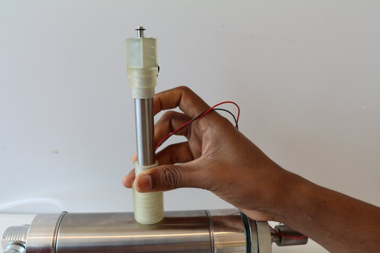

Blank
About
Solitonik: Real world in-situ material testing
Making material measurement properties faster, cheaper, smarter.

Thermometer
Order
Social
Solitonik is the solution for fast and in-situ material property measurements. Computing stiffness of material in real time, it can
FAQ